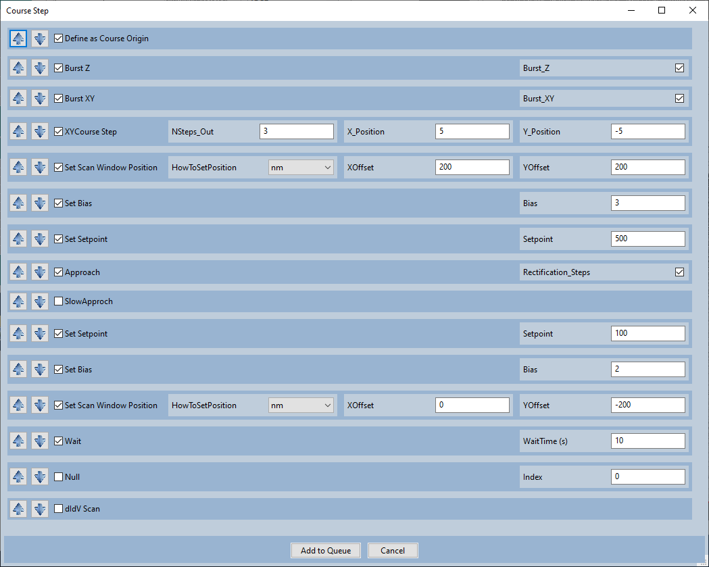
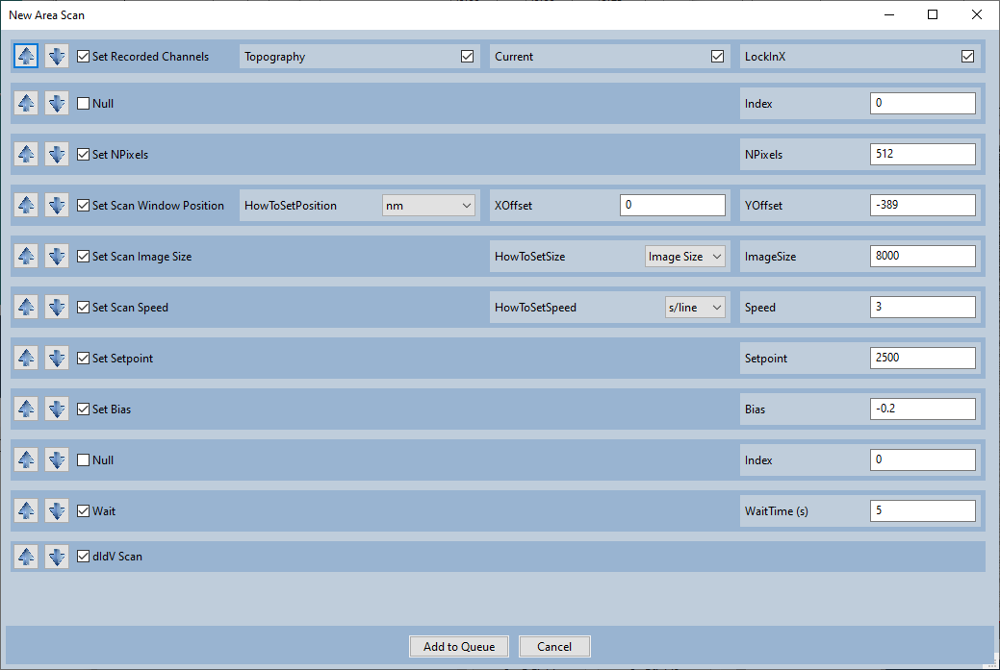

Course Step
These are two of the most convenient macros that we use: Course step and New area scan. There’s nothing special about these macros, you can do the same thing manually or with a python script. The macros just make it incredibly fast and convenient.
The macro for Course Steps consists of the following functions:

Resets the “Course Origin”.
XYCourse Step (Function #4) will move to a position relative to the Course Origin.
Burst Z
Sets Burst Z to True so course steps will use CreaTec’s ‘bursts’ instead of individual steps.
Burst XY
Sets Burst XY to True so course steps will use CreaTec’s ‘bursts’ instead of individual steps.
Set Scan Window position
Moves the tip to near the bottom right corner of the DSP window. Just in case the tip leaves a crater apon approach, the crater will be out of the way.
Set Bias
Sets a somewhat large bias to make crashes and false approaches less likely.
Set Setpoint
Sets a somewhat large setpoint to prevent false approaches from a capactive signal.
Approach
Calls CreaTec’s approach function
Set Setpoint
Returns to a standard setpoint
Set Bias
Returns to a standard bias
Set Scan Window Position
Returns the tip to the center of the DSP window.
Wait
Does nothing for 10 seconds to wait for the piezo creep to go away.
The macro for a New area scan consists of the following functions:

Set Recorded Channels
Sets the topography, current, and dI/dV channel to be recorded.
Set NPixels
Sets the number of pixels in an image to be 512x512
Set Scan Window Position
Moves the tip to the top of the DSP window.
Set Image Scan Size
Sets the scan size to be the full range of the DSP window.
Set Scan Speed
Sets the scan speed to be somewhat slow (in terms of s/lines) because it’ll be scanning a large area.
Set Setpoint
Sets a reasonable setpoint (The default setpoint is changed depending on the material; 2500pA is for Ni(111))
Set Bias
Sets a reasonable bias (The default bias is changed depending on the material; -0.2V is for Ni(111))
Wait
dI/dV Scan